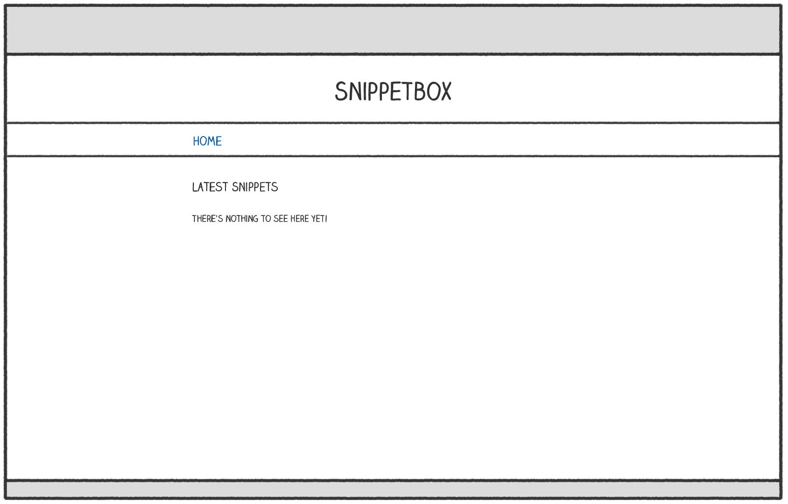
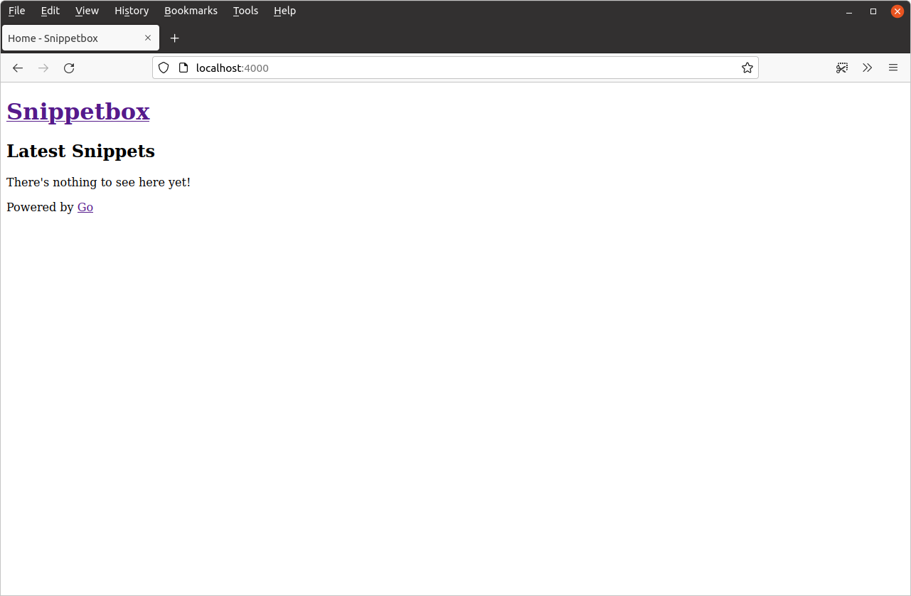

قالببندی HTML و ارثبری
بیایید کمی زندگی به پروژه تزریق کنیم و یک صفحه اصلی مناسب برای برنامه وب Snippetbox خود توسعه دهیم. در چند فصل آینده به سمت ایجاد صفحهای که شبیه به این است کار خواهیم کرد:

بیایید با ایجاد یک فایل قالب در ui/html/pages/home.tmpl برای شامل کردن محتوای HTML صفحه اصلی شروع کنیم. مانند این:
$ mkdir ui/html/pages $ touch ui/html/pages/home.tmpl
و نشانهگذاری HTML زیر را اضافه کنید:
<!doctype html> <html lang='en'> <head> <meta charset='utf-8'> <title>Home - Snippetbox</title> </head> <body> <header> <h1><a href='/'>Snippetbox</a></h1> </header> <main> <h2>Latest Snippets</h2> <p>There's nothing to see here yet!</p> </main> <footer>Powered by <a href='https://golang.org/'>Go</a></footer> </body> </html>
حالا که یک فایل قالب حاوی نشانهگذاری HTML برای صفحه اصلی ایجاد کردهایم، سوال بعدی این است که چگونه handler home خود را وادار کنیم که آن را رندر (render) کند؟
برای این کار باید از بسته html/template در Go استفاده کنیم، که خانوادهای از توابع برای تجزیه و رندر امن قالبهای HTML فراهم میکند. میتوانیم از توابع در این بسته برای تجزیه فایل قالب و سپس اجرای قالب استفاده کنیم.
نشان میدهم. فایل cmd/web/handlers.go را باز کنید و کد زیر را اضافه کنید:
package main import ( "fmt" "html/template" // New import "log" // New import "net/http" "strconv" ) func home(w http.ResponseWriter, r *http.Request) { w.Header().Add("Server", "Go") // Use the template.ParseFiles() function to read the template file into a // template set. If there's an error, we log the detailed error message, use // the http.Error() function to send an Internal Server Error response to the // user, and then return from the handler so no subsequent code is executed. ts, err := template.ParseFiles("./ui/html/pages/home.tmpl") if err != nil { log.Print(err.Error()) http.Error(w, "Internal Server Error", http.StatusInternalServerError) return } // Then we use the Execute() method on the template set to write the // template content as the response body. The last parameter to Execute() // represents any dynamic data that we want to pass in, which for now we'll // leave as nil. err = ts.Execute(w, nil) if err != nil { log.Print(err.Error()) http.Error(w, "Internal Server Error", http.StatusInternalServerError) } } ...
چند نکته مهم در مورد این کد وجود دارد که باید اشاره کنم:
مسیر فایلی که به تابع
template.ParseFiles()ارسال میکنید باید یا نسبت به دایرکتوری کاری فعلی شما باشد، یا یک مسیر مطلق. در کد بالا مسیر را نسبت به ریشه دایرکتوری پروژه قرار دادهام.اگر هر یک از توابع
template.ParseFiles()یاts.Execute()یک خطا برگردانند، پیام خطای تفصیلی را لاگ میکنیم و سپس از تابعhttp.Error()برای ارسال یک پاسخ به کاربر استفاده میکنیم.http.Error()یک تابع helper سبک است که یک پیام خطای متنی ساده و یک کد وضعیت HTTP خاص به کاربر ارسال میکند (در کد ما پیام"Internal Server Error"و کد وضعیت500را ارسال میکنیم، که با ثابتhttp.StatusInternalServerErrorنمایش داده میشود). به طور مؤثر، این به این معنی است که اگر خطایی وجود داشته باشد، کاربر پیامInternal Server Errorرا در مرورگر خود خواهد دید، اما پیام خطای تفصیلی در پیامهای لاگ برنامه ثبت خواهد شد.
پس، با این گفته، مطمئن شوید که در ریشه دایرکتوری پروژه خود هستید و برنامه را دوباره راهاندازی کنید:
$ cd $HOME/code/snippetbox $ go run ./cmd/web 2024/03/18 11:29:23 starting server on :4000
سپس http://localhost:4000 را در مرورگر وب خود باز کنید. باید ببینید که صفحه اصلی HTML به خوبی شکل میگیرد.

ترکیب قالب
همانطور که صفحات بیشتری به برنامه وب خود اضافه میکنیم، برخی نشانهگذاریهای HTML مشترک و boilerplate وجود خواهد داشت که میخواهیم در هر صفحه شامل کنیم — مانند هدر، ناوبری و متادیتا داخل عنصر HTML <head>.
برای جلوگیری از تکرار و صرفهجویی در تایپ، ایده خوبی است که یک قالب پایه (base) (یا اصلی (master)) ایجاد کنیم که شامل این محتوای مشترک است، که سپس میتوانیم با نشانهگذاری خاص صفحه برای صفحات فردی ترکیب (compose) کنیم.
بروید و یک فایل جدید ui/html/base.tmpl ایجاد کنید…
$ touch ui/html/base.tmpl
و نشانهگذاری زیر را اضافه کنید (که میخواهیم در هر صفحه ظاهر شود):
{{define "base"}}
<!doctype html>
<html lang='en'>
<head>
<meta charset='utf-8'>
<title>{{template "title" .}} - Snippetbox</title>
</head>
<body>
<header>
<h1><a href='/'>Snippetbox</a></h1>
</header>
<main>
{{template "main" .}}
</main>
<footer>Powered by <a href='https://golang.org/'>Go</a></footer>
</body>
</html>
{{end}}
امیدوارم اگر قبلاً از قالببندی در زبانهای دیگر استفاده کردهاید، این برای شما آشنا به نظر برسد. اساساً فقط HTML معمولی با برخی اکشنها (actions) اضافی در براکتهای فرفری دوتایی است.
از اکشن {{define "base"}}...{{end}} به عنوان یک wrapper استفاده میکنیم تا یک قالب نامگذاری شده (named template) متمایز به نام base تعریف کنیم، که شامل محتوایی است که میخواهیم در هر صفحه ظاهر شود.
داخل این از اکشنهای {{template "title" .}} و {{template "main" .}} استفاده میکنیم تا نشان دهیم که میخواهیم قالبهای نامگذاری شده دیگر (به نام title و main) را در یک مکان خاص در HTML فراخوانی کنیم.
حالا بیایید به فایل ui/html/pages/home.tmpl برگردیم و آن را بهروزرسانی کنیم تا قالبهای نامگذاری شده title و main حاوی محتوای خاص برای صفحه اصلی را تعریف کند.
{{define "title"}}Home{{end}}
{{define "main"}}
<h2>Latest Snippets</h2>
<p>There's nothing to see here yet!</p>
{{end}}
پس از انجام این کار، مرحله بعدی بهروزرسانی کد در handler home شما است تا هر دو فایل قالب را تجزیه کند، مانند این:
package main ... func home(w http.ResponseWriter, r *http.Request) { w.Header().Add("Server", "Go") // Initialize a slice containing the paths to the two files. It's important // to note that the file containing our base template must be the *first* // file in the slice. files := []string{ "./ui/html/base.tmpl", "./ui/html/pages/home.tmpl", } // Use the template.ParseFiles() function to read the files and store the // templates in a template set. Notice that we use ... to pass the contents // of the files slice as variadic arguments. ts, err := template.ParseFiles(files...) if err != nil { log.Print(err.Error()) http.Error(w, "Internal Server Error", http.StatusInternalServerError) return } // Use the ExecuteTemplate() method to write the content of the "base" // template as the response body. err = ts.ExecuteTemplate(w, "base", nil) if err != nil { log.Print(err.Error()) http.Error(w, "Internal Server Error", http.StatusInternalServerError) } } ...
پس اکنون، به جای شامل کردن HTML مستقیماً، مجموعه قالب ما شامل 3 قالب نامگذاری شده است — base، title و main. از متد ExecuteTemplate() استفاده میکنیم تا به Go بگوییم که به طور خاص میخواهیم با استفاده از محتوای قالب base پاسخ دهیم (که به نوبه خود قالبهای title و main ما را فراخوانی میکند).
آزادانه سرور را دوباره راهاندازی کنید و این را امتحان کنید. باید ببینید که همان خروجی قبلی را رندر میکند (اگرچه فاصلههای خالی اضافی در منبع HTML جایی که اکشنها هستند وجود خواهد داشت).
جاسازی partials
برای برخی برنامهها ممکن است بخواهید بخشهای خاصی از HTML را به partials تقسیم کنید که میتوانند در صفحات یا layoutهای مختلف دوباره استفاده شوند. برای نشان دادن، بیایید یک partial حاوی نوار ناوبری اصلی برای برنامه وب خود ایجاد کنیم.
یک فایل جدید ui/html/partials/nav.tmpl حاوی یک قالب نامگذاری شده به نام "nav" ایجاد کنید، مانند این:
$ mkdir ui/html/partials $ touch ui/html/partials/nav.tmpl
{{define "nav"}}
<nav>
<a href='/'>Home</a>
</nav>
{{end}}
سپس قالب base را بهروزرسانی کنید تا partial ناوبری را با استفاده از اکشن {{template "nav" .}} فراخوانی کند:
{{define "base"}}
<!doctype html>
<html lang='en'>
<head>
<meta charset='utf-8'>
<title>{{template "title" .}} - Snippetbox</title>
</head>
<body>
<header>
<h1><a href='/'>Snippetbox</a></h1>
</header>
<!-- Invoke the navigation template -->
{{template "nav" .}}
<main>
{{template "main" .}}
</main>
<footer>Powered by <a href='https://golang.org/'>Go</a></footer>
</body>
</html>
{{end}}
در نهایت، باید handler home را بهروزرسانی کنیم تا فایل جدید ui/html/partials/nav.tmpl را هنگام تجزیه فایلهای قالب شامل کند:
package main ... func home(w http.ResponseWriter, r *http.Request) { w.Header().Add("Server", "Go") // Include the navigation partial in the template files. files := []string{ "./ui/html/base.tmpl", "./ui/html/partials/nav.tmpl", "./ui/html/pages/home.tmpl", } ts, err := template.ParseFiles(files...) if err != nil { log.Print(err.Error()) http.Error(w, "Internal Server Error", http.StatusInternalServerError) return } err = ts.ExecuteTemplate(w, "base", nil) if err != nil { log.Print(err.Error()) http.Error(w, "Internal Server Error", http.StatusInternalServerError) } } ...
پس از راهاندازی مجدد سرور، قالب base اکنون باید قالب nav را فراخوانی کند و صفحه اصلی شما باید شبیه به این باشد:
اطلاعات اضافی
اکشن block
در کد بالا از اکشن {{template}} برای فراخوانی یک قالب از دیگری استفاده کردهایم. اما Go همچنین یک اکشن {{block}}...{{end}} فراهم میکند که میتوانید به جای آن استفاده کنید. این مانند اکشن {{template}} عمل میکند، به جز اینکه به شما اجازه میدهد محتوای پیشفرضی را مشخص کنید اگر قالب فراخوانی شده در مجموعه قالب فعلی وجود نداشته باشد.
در بافت یک برنامه وب، این زمانی مفید است که میخواهید محتوای پیشفرضی (مانند یک sidebar) فراهم کنید که صفحات فردی میتوانند در صورت نیاز به صورت موردی آن را override کنند.
از نظر نحوی آن را مانند این استفاده میکنید:
{{define "base"}}
<h1>An example template</h1>
{{block "sidebar" .}}
<p>My default sidebar content</p>
{{end}}
{{end}}
اما — اگر میخواهید — لازم نیست محتوای پیشفرضی بین اکشنهای {{block}} و {{end}} قرار دهید. در آن صورت، قالب فراخوانی شده مانند اینکه ‘اختیاری’ است عمل میکند. اگر قالب در مجموعه قالب وجود داشته باشد، سپس رندر خواهد شد. اما اگر وجود نداشته باشد، هیچ چیزی نمایش داده نخواهد شد.